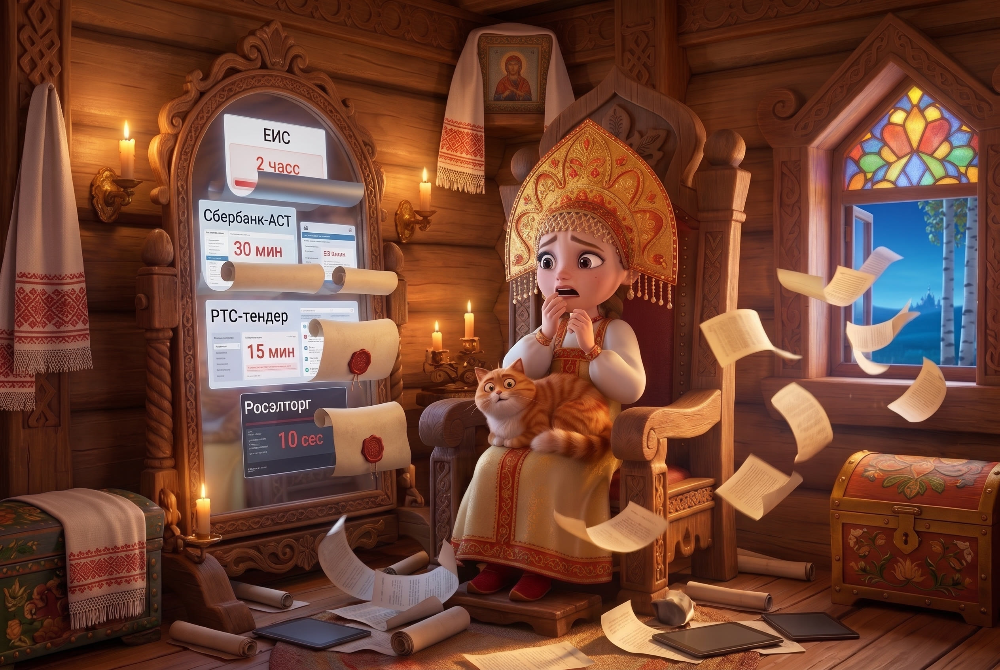
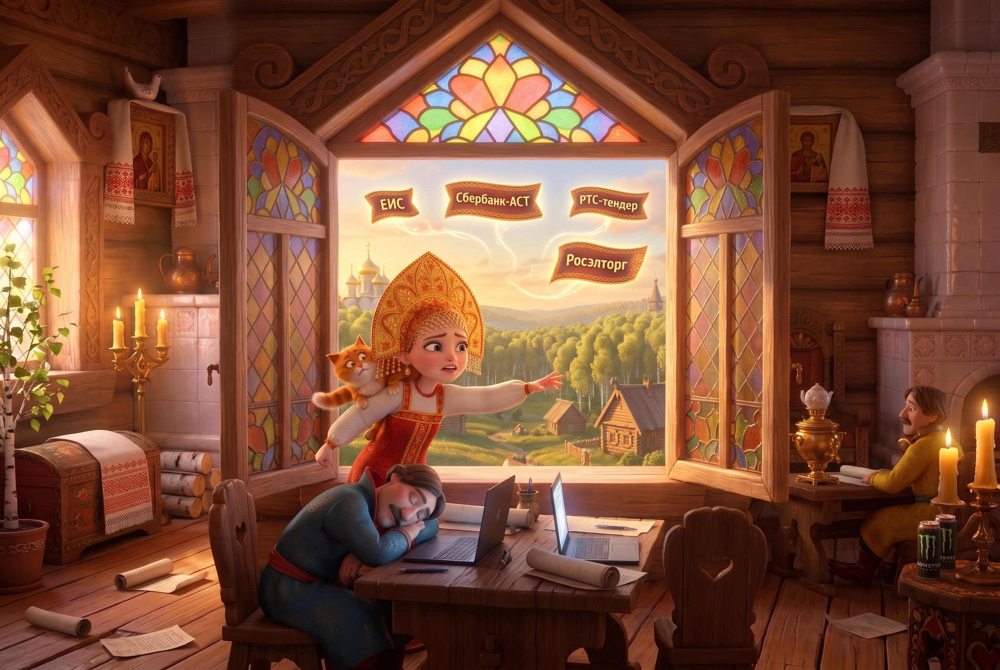
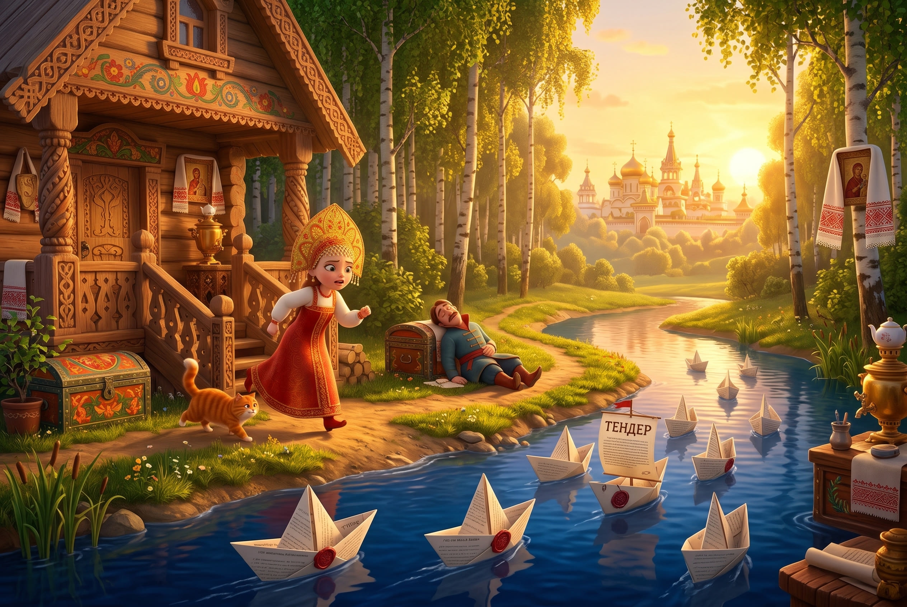
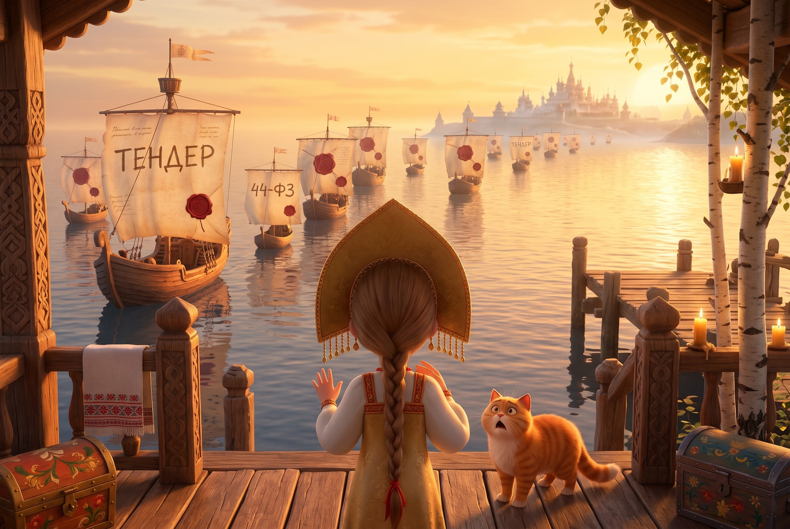

«А тендеры тем временем уплывали за тридевять земель»
1. Площадки: экраны слетают с зеркала и улетают в окно

2. Площадки улетают над лесом, царевна тянется из окна

3. Кораблики из тендеров плывут по реке

4. Корабли с парусами-тендерами уходят за три моря
